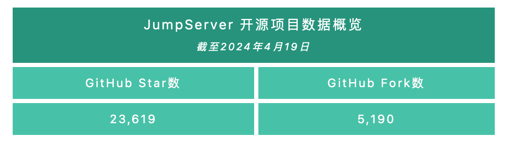
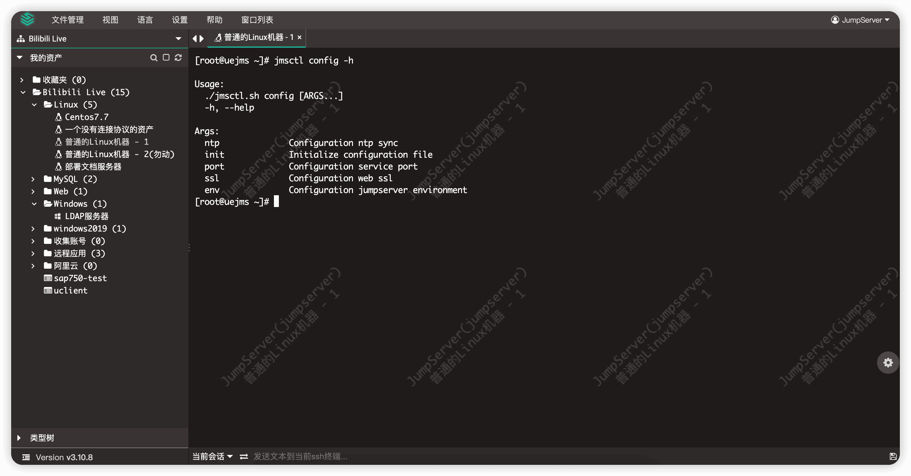
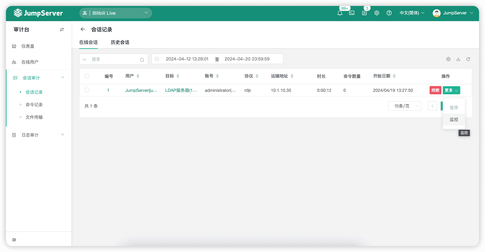
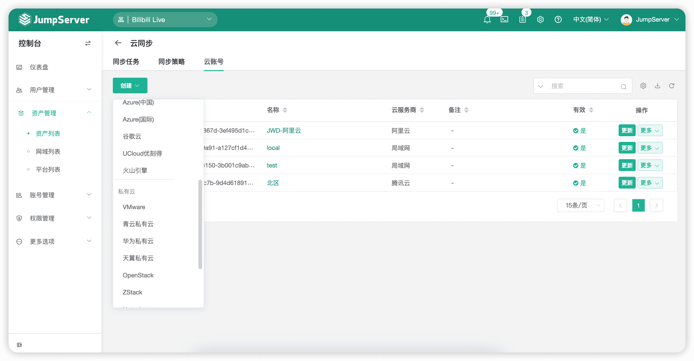
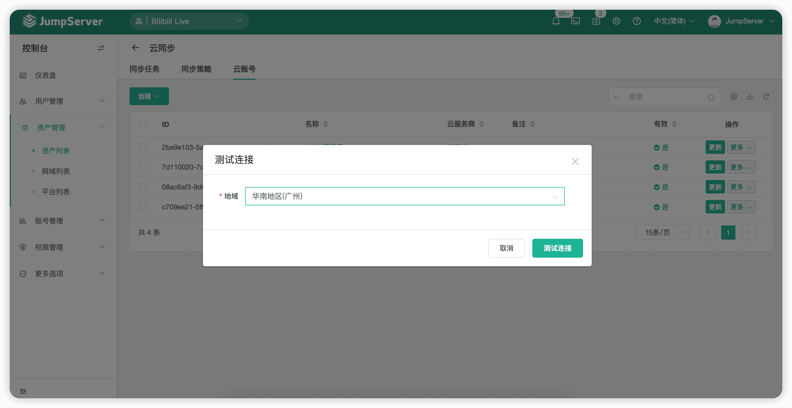
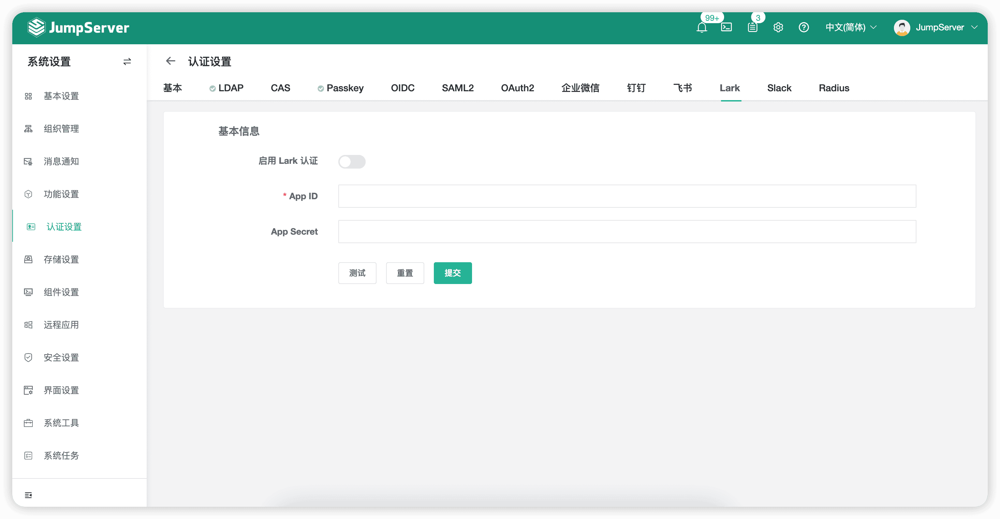
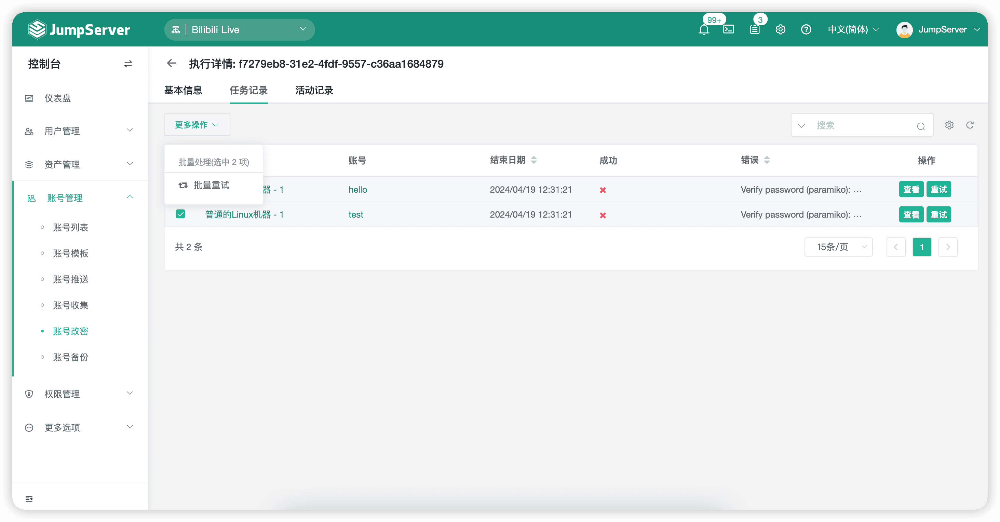
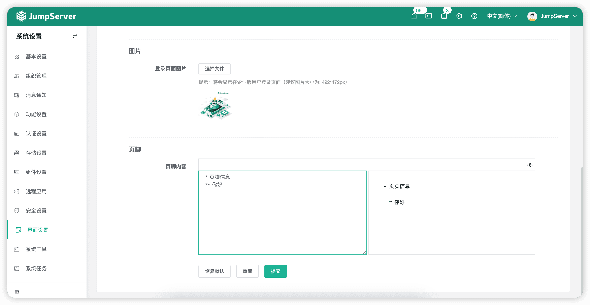

2024年4月22日，JumpServer开源堡垒机正式发布v3.10.8 LTS版本。JumpServer开源项目组将对v3.10 LTS版本提供长期的支持和优化，并定期迭代发布小版本。欢迎广大社区用户升级至v3.10 LTS最新版本，以获得更佳的使用体验。
在v3.10.8 LTS版本中，JumpServer新增中文繁体语言包。针对平台级别的自动化任务，JumpServer支持使用Telnet的方式测试资产的可连接性。同时，JumpServer新增支持Ansible任务在沙箱中运行，以提高任务运行的安全性。用户在使用快捷命令时，可以手动中断正在执行命令的任务。
另外，新版本的JumpServer还支持管理员一键卸载已安装的远程应用，以及支持开启或者关闭系统定时任务的执行。对于Linux、Windows、远程应用等资产，JumpServer支持对其RDP文件的Token复用功能。
X-Pack增强包方面，“云同步”功能新增支持火山引擎云服务。JumpServer支持管理员监控使用本地客户端方式连接的Windows会话和远程应用会话。JumpServer操作界面个性化设置方面，管理员可以自定义设置页脚内容。这样一来，企业的个性化内容可以更灵活地、直观地体现在JumpServer页面中。另外，新版本的JumpServer支持管理员同时配置并启用飞书和Lark（飞书国际版）认证服务。
新增功能
1. 支持中文繁体（感谢@elf168的贡献）
在JumpServer v3.10.8 LTS版本中，JumpServer操作界面的语言新增支持使用中文繁体，目前JumpServer共支持中文简体、中文繁体、英文、日语四种语言包。

▲ 图1 JumpServer操作界面支持中文繁体2. 支持通过Telnet方式测试资产的可连接性
在JumpServer v3.10.8 LTS版本中，针对平台级别的自动化任务，JumpServer支持使用Telnet协议的方式来测试资产的可连接性。通过这种方式，用户可以简单地探知JumpServer与资产之间的网络是否通畅。
▲ 图2 支持通过Telnet方式测试资产的可连接性
3. 支持管理员一键卸载已安装的远程应用
在JumpServer v3.10.8 LTS版本中，管理员可以在远程应用发布机的“详情”界面对此台发布机中的远程应用进行部署和一键卸载。
▲ 图3 支持管理员一键卸载已安装的远程应用
4. 支持用户手动停止正在执行的快捷命令任务
在JumpServer v3.10.8 LTS版本中，用户在执行快捷命令时，可以手动停止已经下发的快捷命令任务。
▲ 图4 支持用户手动停止正在执行的快捷命令任务
5. 支持开启/关闭系统任务执行（定时任务）
在JumpServer v3.10.8 LTS版本中，支持开启/关闭系统定时任务的执行。管理员可以选择“系统设置”→“系统任务”→“任务列表”，在任务列表中关闭内置的定时任务。
▲ 图5 支持开启/关闭系统任务执行（定时任务）
6. 支持Linux、Windows、远程应用等资产使用客户端方式连接时的Token复用功能
在JumpServer v3.10.8 LTS版本中，对于Linux、Windows、远程应用等资产，JumpServer支持对其RDP文件的Token复用功能，从而减少用户需要更新RDP文件的次数，提升运维管理的效率。
▲ 图6 支持Linux、Windows、远程应用等资产使用客户端方式连接时的Token复用功能
7. 支持Ansible任务在沙箱中运行
在JumpServer v3.10.8 LTS版本中，用户在使用Ansible执行任务时，支持其在全新的沙箱环境中运行。运行环境为“jms_receptor”容器，防止一些恶意任务获取到系统敏感信息，导致敏感信息泄漏，以提高任务运行的安全性。此功能默认为开启状态。
关闭该功能的步骤为：在“config.txt”文件中修改/增加配置项“ANSIBLE_RECEPTOR_ENABLE = false”。
8. 支持查看某个资产授权的账号
在JumpServer v3.10.8 LTS版本中，支持查看某个资产授权的账号。管理员可以选择“用户管理”→“用户列表”，在某个用户的详情页面中，点击“授权的资产”选项卡，即可在具体的资产列表中查看授权的资产账号名集合。
▲ 图7 支持查看某个资产授权的账号
9. Installer安装部署工具支持部分配置项的快捷配置操作
在JumpServer v3.10.8 LTS版本中，安装脚本工具增加快捷命令配置项，支持部分配置项的快捷配置操作。这样一来，用户可以快速通过命令行的方式修改一些配置（例如：配置NTP同步、初始化配置文件、配置服务端口等），有效避免了手动修改“config.txt”文件可能造成人工误修改的情况。
▲ 图8 Installer安装部署工具支持部分配置项的快捷配置操作
10. 支持管理员监控使用本地客户端方式连接的Windows会话和远程应用会话（Razor组件）（X-Pack增强包内）
在JumpServer v3.10.8 LTS版本中，管理员可以在“会话记录”界面监控使用本地客户端方式连接的Windows会话和远程应用会话，进一步提高管理员对资产的管控能力。

▲ 图9 支持管理员监控使用本地客户端方式连接的Windows会话和远程应用会话（X-Pack增强包内）11. “云同步”功能新增支持火山引擎云服务（X-Pack增强包内）
在JumpServer v3.10.8 LTS版本中，“云同步”模块支持的云平台类型新增支持火山引擎云平台。JumpServer多云资产同步功能更加强大，满足了更多企业用户多云管理的需求。

▲ 图10 “云同步”功能新增支持火山引擎云服务（X-Pack增强包内）12. 支持用户在测试云账号时选择地域（云同步账号模块）（X-Pack增强包内）
在JumpServer v3.10.8 LTS版本中，在测试云账号时，支持用户选择对应的地域进行测试。这样一来，解决了某些账号在没有一些地域权限时，账号测试失败的问题。

▲ 图11 支持用户在测试云账号时选择地域（X-Pack增强包内）13. 支持管理员同时配置并启用飞书和 Lark（飞书国际版）认证服务（X-Pack增强包内）
在JumpServer v3.10.8 LTS版本中，JumpServer将飞书认证服务和Lark（飞书国际版）认证服务进行了拆分。这样一来，管理员就可以在一套环境中同时配置并启用飞书和Lark的认证服务了。

▲ 图12 支持管理员同时配置并启用飞书和 Lark认证服务（X-Pack增强包内）14. 账号改密任务支持批量重试（X-Pack增强包内）
在JumpServer v3.10.8 LTS版本中，账号改密任务支持批量重试执行。账号改密任务执行后，管理员可以在任务的“执行详情”页面中，批量对某些执行失败的任务进行重试。

▲ 图13 账号改密任务支持批量重试（X-Pack增强包内）15. 支持管理员使用Markdown格式配置页脚内容（X-Pack增强包内）
在JumpServer v3.10.8 LTS版本中，备案信息优化为页脚信息，同时支持管理员以Markdown格式配置页脚内容，更好地满足了广大企业用户的自定义配置需求。

▲ 图14 支持管理员使用Markdown格式配置页脚内容（X-Pack增强包内）功能优化
■ 优化MongoDB数据库资产，支持配置authSource参数认证数据库；
■ 优化创建网域时资产为非必填项，允许管理员先创建网域后创建资产；
■ 导出资产的Excel、CSV文件时，默认不打开示例文件；
■ 优化应用发布机配置，仅支持初始化配置；
■ 优化资产授权规则导出文件时，没有授权资产和用户信息的问题；
■ 优化Linux类型的资产选择，可选择使用低版本（5.x、6.x）或高版本的SSH协议（可以在新建Linux平台的SSH协议中进行选择）；
■ 优化用户配置资产连接的默认方式（当前窗口、新窗口）；
■ 优化Windows会话的录像播放器的显示问题；
■ 优化资产授权规则中账号数量统计不准确的问题（包含指定账号的情况）；
■ 优化资产授权列表，显示授权的有效期字段信息；
■ 优化LDAP用户认证，支持配置“user_dn”参数缓存时间，解决在用户量较多时用户认证较慢的问题；
■ 优化点击命令记录列表的某条记录可以进行颜色标识，刷新页面后恢复至默认颜色，可以方便地快速定位至曾经操作过的记录；
■ 优化Ansible使用“ansible_winrm”模块执行任务的超时时间（设定为120s）；
■ 优化工作台“我的资产”页面中，根据资产可连接性排序不生效的问题；
■ 优化资产修改激活状态没有记录至操作日志的问题；
■ 优化所有资源列表的默认排序规则（一般资源默认按照“名称”排序，任务执行记录默认按照“开始时间”降序排序）；
■ 优化支持配置文件导出资源时的最大数量（config.txt文件→ MAX_LIMIT_PER_PAGE）；
■ 优化校验第三方登录用户的邮箱格式，如果不正确则使用默认邮箱格式；
■ 提高短信发送任务的优先级；
■ 优化用户执行的Celery任务日志查看权限（只有当前用户可以查看）；
■ 资产会话支持显示导出时长（duration）字段；
■ 优化审计台仪表盘的命令记录总数为数据库和Elasticsearch命令存储服务的总和；
■ 优化LDAP系统设置，测试用户登录时不需要管理员提前手动测试LDAP服务的可连接性；
■ 优化移动端创建资产授权时，用户字段设置遮挡的问题；
■ 连接远程应用会话新增“Alt+Tab”快捷键支持（Lion组件）；
■ 优化AWS S3录像存储自定义域名地址时，可能会上传失败的问题（KoKo组件、Lion组件、Razor组件）；
■ 通过客户端方式连接数据库时，取消命令记录长度限制的问题（Magnus组件）；
■ 优化控制台页面的组织选择问题（X-Pack增强包内）；
■ 支持在全局组织中显示用户所属的组织及角色（X-Pack增强包内）；
■ 账号收集任务支持单独添加资产（X-Pack增强包内）；
■ 优化页面主题设置中，Logo图片预览背景颜色的问题（X-Pack增强包内）；
■ 账号改密任务执行记录可以查看当前执行中的密码信息（X-Pack增强包内）；
■ 取消系统设置中Chat-AI功能参数的长度限制（X-Pack增强包内）；
■ 关闭“云同步”功能中，阿里专有云平台的证书校验（X-Pack增强包内）。
Bug修复
■ 修复页面中的长文本输入框存在跨站脚本攻击（Cross-Site Scripting，XSS）的安全漏洞，感谢西卡德高安全团队发现并上报至JumpServer开源项目组；
■ 修复用户登录页面“自动登录”选项不能勾选的问题；
■ 修复克隆Web资产时，标签选择器信息丢失的问题；
■ 修复Celery异步任务经常卡住不执行的问题（由于Redis Lock竞争导致）；
■ 修复“忘记密码”功能的短信验证码总是提醒过期的问题；
■ 修复用户会话偶尔会过期，需要重新登录的问题；
■ 修复用户使用SSO方式认证时，没有执行用户登录规则校验的问题；
■ 修复管理员手动下线用户失败的问题；
■ 修复在用户列表中过滤用户组织角色不生效的问题；
■ 修复用户收藏夹文件中的资产会丢失的问题；
■ 修复FTP审计文件没有正常清理的问题；
■ 修复通过客户端方式连接Redis数据库时，Value值较大导致操作失败的问题（Magnus组件）；
■ 修复使用WinSCP工具连接资产并下载文件时，出现报错的问题（KoKo组件）；
■ 修复Luna页面出现用户会话过期提醒时，点击“确定”按钮无法返回登录页面的问题；
■ 修复Kael组件不启用时，Luna页面出现WebSocket报错的问题；
■ 修复通过Web方式连接Kubernetes资产和远程应用时，Luna页面没有浮窗图标的问题（Lion组件）；
■ 修复点击管理页面的Logo图标时，出现卡住情况的问题；
■ 修复创建账号时没有默认资产的问题；
■ 修复“会话详情”页面中文件传输列表过滤失败的问题；
■ 修复因录像存储服务配置无效，导致录像下载失败的问题；
■ 修复测试RDP协议资产可连接性时，使用的Python解释器路径不对的问题；
■ 修复自定义短信测试结果总是显示成功的问题；
■ 修复关闭“作业中心”配置后，用户批量上传文件报错的问题；
■ 修复Tcpdump系统工具捕获的IP为空时，系统解析不到的问题；
■ 修复定时任务组件在Redis开启SSL的情况下，启动失败的问题；
■ 修复用户执行快捷命令时，当资产不存在指定账号的情况下，账号策略选择“仅特权用户执行”选项不生效的问题；
■ 修复全局组织中，组织角色用户数量不准确的问题（X-Pack增强包内）；
■ 修复工单二级审批通过后，一级审批管理员看不到工单的问题（X-Pack增强包内）；
■ 修复资产登录规则（ACL）通过属性筛选并选择“标签”选项时，规则不生效的问题（X-Pack增强包内）；
■ 修复OAuth2未激活用户登录认证时，会出现重复跳转登录的问题（X-Pack增强包内）；
■ 修复工单系统搜索过滤申请人失败的问题（X-Pack增强包内）；
■ 修复资产登录规则中设置的节点或资产被删除后，用户连接资产会出现报错的问题（X-Pack增强包内）；
■ 修复云同步任务中存在多个策略时，部分策略不生效的问题（X-Pack增强包内）；
■ 修复用户登录资产时，使用手动账号没有进行资产登录规则（ACL）控制的问题（X-Pack增强包内）。